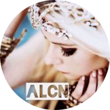
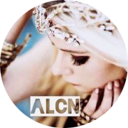

艾薇儿官方宣布：亚洲巡演因疫情原因全部取消
艾薇儿演唱会海报
新浪娱乐讯2月29日，加拿大天后艾薇儿正式发文宣布，因新冠肺炎的影响，原定于4月和5月的亚洲巡演将取消。
2019年10月，艾薇儿通过海报公布亚巡的消息，其中中国包括深圳、上海、佛山、南京、香港和台湾等场次。艾薇儿在文中表示自己和团队为世界巡演准备了很多，希望大家能保重身体并期待后续的改期演出。有消息表示艾薇儿团队希望以后能够重新安排亚洲巡演日程，但是目前暂未确定。对于期待已久的演唱会因疫情取消，粉丝也表示很难过但能理解：“哎，特殊时期，只能以安全为重了。”“拜托，疫情过去一定要来好吗，我们等。”
艾薇儿特奥会深情献唱重回舞台 因病阔别歌坛一年多 以新单《Fly》复出
艾薇儿晒出她与团队的最新合影
时光网讯在阔别了歌迷视线一年多之后，艾薇儿·拉维尼终于重返舞台了，昨晚她在2015世界夏季特殊奥林匹克运动会开幕式上演唱了全新单曲《Fly》，令无数歌迷动容。
这支歌曲是艾薇儿先给特奥会的慈善宣传曲，在开幕式上，艾薇儿的歌声也伴随了整个火炬被传递的过程，励志的歌词不但是献给奥运会的选手，也写出了自己与病魔斗争的心路历程，现场正能量爆棚。
艾薇儿30岁生日之后被诊断患上了“莱姆症”，是一种感染性疾病，艾薇儿患病后卧床超过5个月，一度命悬一线，今年四月份才渐渐恢复。在早前接受《早安美国》采访的时候，艾薇儿说：“说实话，我能感受到自己是被爱的，在与疾病斗争的过程中我会想到歌迷们。现在我就像是重生了一次，我会继续做自己最爱的事，在这段经历之后我会觉得生活更加令人激动。”
艾薇儿2014巡演上海启航 引爆朋克风暴
艾薇儿(资料图)
新浪娱乐讯来自加拿大的Pop Punk流行摇滚天后艾薇儿(Avril Lavigne)2014年中国巡回演唱会正式启动！艾薇儿于2002年凭藉六白金销量的首张专辑《展翅高飞Let Go》一举成名，其后的《酷到骨子里Under My Skin》(2004年)专辑惊人突破全球两千五百万张销售量；2007年的《The Best Damn Thing(美丽坏东西)》亦达白金销量称霸12国排行冠军。出道12年获得超过八项格莱美奖提名，抱走七座朱诺音乐奖，多达十一座MTV音乐奖以及四座世界音乐大奖傲人佳绩。至目前为止，全球总共售出超过五千万张专辑和近五千万单曲。
破纪录巡演引爆八城
2014年2月21日，由耀星传播和Live Nation联合呈献的“Avril Lavigne艾薇儿2014中国巡回演唱会”正式开启，首站登陆上海梅赛德斯-奔驰文化中心引爆朋克摇滚魅力！其后分站还包括：2月23日广州、2月25日武汉、2月28日南京、3月2日北京、3月4日杭州、3月7日成都、3月9日深圳。19天跑遍内地八大城市的创举可谓前无古人！
超紧密的马拉松式巡演行程，也打破由她自己保持的欧美天后内地巡演场数纪录，完成史无前例的中国内地八城话题性巡演，成为征服内地演唱会市场的欧美第一人！而且也让中国首度超越娱乐大国日本，成为本次全球巡演最多场次的亚洲国家！万众期待的演唱会在全国歌迷当中引起热议，并引发各地抢票热潮，一开售多个票段的门票随即宣告售罄，一票难求的盛况，也为2014年的内地演唱会市场打下一支强心针。
全国歌迷体验摇滚之夜
在这次的巡演上，全国歌迷率先感受到艾薇儿最新同名专辑《Avril Lavigne》的摇滚魅力。2013年的艾薇儿全面发放个人潜能，无论是专辑还是在高强度、高密度的演唱会上，既呈现出过往的全部摇滚风格，也实验了不同的声音，表现出强大的可塑性。在2014年的世界巡回演唱会上，艾薇儿与乐迷展现更多关于生命、爱、Rock N Roll等的故事，叙述一个真实的自己，对第一张专辑《Let Go》致敬。
艾薇儿这次演唱新旧金曲的比例均衡，经典作品包括《Complicated》、《I'm With You》、《My Happy Ending》、《He wasn't》等尽皆收录，而同时新专辑内的多首热唱新歌如《Here's To Never Growing Up》、《Rock N Roll》、《Let Me Go》、《Hello Kitty》等更是会首次在现场为内地歌迷奉上！难怪被歌迷称为是本年度最期待的摇滚盛宴！
而作为现场实力派，艾薇儿无需过分浮夸的舞台服装和搔首弄姿的舞蹈，本真就是最强现场，感染歌迷的每一个细胞，正是艾薇儿！不论是精灵朋克造型，还是日渐展现的性感魅力，都让全场歌迷整晚陶醉在热血澎湃的摇滚魔力当中！
艾薇儿与五分钱乐队主唱订婚 男友斥巨资买钻戒
艾薇儿与查德·克罗格
据知情人士透露，备受关注的超人气女歌手艾薇儿·拉维尼，已确认和男友查德·克罗格订婚。查德·克罗格是加拿大五分钱乐队的主唱，也是艾薇儿新专辑的制作人，两人是在创作新专辑中产生了爱情的火花，相处半年后终成正果。
今年8月8日，这位37岁男歌手向艾薇儿求婚，求婚钻戒就有14克拉。在此之后，艾薇儿家人表示：“他让艾薇儿很幸福，我们双方家庭都不能再兴奋了。”
这是查德的首次婚姻，对艾薇儿而言，在2009年与Sum41主唱离婚后，将第二次步入婚姻殿堂。
艾薇儿：中国巡演意义非凡 音乐是艺术而非竞争
艾薇儿北京代言秀中文 宣布将再度来华开唱
新浪娱乐讯 北京时间4月27日下午，有着流行朋克教主(国外称公主)之称的加拿大歌手艾薇儿·拉维妮(Avril Lavigne)在北京召开新闻发布会，宣布其和意大利品牌Lotto的合作，艾薇儿此次中国之行除了时装品牌LOTTO活动外，对歌迷来说更令人兴奋的是她将在4月30日北京乐谷音乐节上献唱，这也是艾薇儿继2008年的中国巡演后再次回到北京登台表演。在发布会之后，艾薇儿接受了新浪娱乐的专访，谈了本次音乐节的准备以及对中国巡演的回忆和期待。以下是访谈实录：
中国巡演意义非凡 为音乐节苦练三周将献唱20首歌
艾薇儿：你好！(中文) 我是艾薇儿-拉维妮 大家好！
新浪娱乐：欢迎回到北京，对于上次的北京之旅还有什么有趣的回忆和我们分享下吗？
艾薇儿：我记得那次演出很激动人心，非常大，我也很高兴能回来，并从这里开始我的巡演。我听说会有2万人参加这个音乐节，一定很让人兴奋。以此来开始我的巡演实在是太棒了。我早来了两天，来参加这个和Lotto的代言活动。
新浪娱乐：那么为这个音乐节做了什么特别的准备吗？
艾薇儿：有，我为此排练了三周时间
新浪娱乐：那你会唱大概多少首歌？
艾薇儿：20首
新浪娱乐：太好了，那在穿着打扮上有没有特别下翻功夫？
艾薇儿：基本上我都是在为歌和我的嗓音做准备，在过去三周里我一直在洛杉矶，和声乐教练做很多练习，主要是肌肉方面的，演唱就好象是马拉松，你知道我要唱20首歌，所以要为此做很多准备。
新浪娱乐：你对自己在中国的受欢迎程度有了解吗？
艾薇儿：我的上一次巡演，在2008年的那次，我是当时第一个在中国做了完整巡演的西方歌手，对我来说那是个极大的荣誉，我的演出规模很大，很激动人心，我的粉丝们都很给力，所以我对在这里巡演的记忆，非常深刻。对我来说也意义非凡，所以我回到中国来开始我的巡演。
大谈自己：我是个歌手，也是个作词人，我重视家庭，也重视回馈社会
新浪娱乐：你知道在中国，很多你的歌迷都称呼你为流行朋克教主，好像世界各地也有很多人这么称呼你，我听说你自己并不这么认为，而且你的Twitter简介是“职业摇滚歌手”，可以谈谈这个吗？
艾薇儿：你是说关于朋克的说法吗？
新浪娱乐：对。
艾薇儿：我想说的是，我是个歌手和作词人，我思想开放，我是个26岁的姑娘，我为人诚恳，我热爱音乐，我在此也是因为对音乐的爱，我这辈子也有很多别的想做的事，比如设计时装，香水等。我觉得家人和朋友非常重要，回馈社会也很重要，所以我创立了艾薇儿-拉维妮基金会，旨在救助残障儿童，这是我目前也是这辈子最重视的事之一。
新浪娱乐：刚才你说到时装设计，你已经是个时装设计师了，有自己的品牌叫Abbey Down，给我们介绍一下吧。
艾薇儿：Abbey Down是我的时装品牌，已经有了几年了，从这个品牌上我也学到了很多，我建立了Abbey Down.com网站，我从中学到了很多设计的知识，通过它我也可以做很多别的事，和一些大公司合作比如Lotto，和他们一起设计，虽然会受到他们的影响，但我依然还是我，还有就是能够来到中国，这个城市对我来说很重要，我很喜欢来到这里，来旅行，来巡演，总之它给了我很多机会。
谈其他女歌手：音乐是艺术而不是竞争
新浪娱乐：上个月你刚刚发了个人的第四张专辑，距离你的第三张专辑已经过去了4年，这段时间里别的女歌手占领了市场，比如Lady Gaga,Katey Perry等人的名字频繁出现，这对你来说会带来某种压力吗？或者说你完全不在乎？
艾薇儿：音乐本身是种艺术，对我来说，不存在竞争，我们都各做各的事，大家都不相同，我觉得有很多年轻独立又强大的女歌手是一件好事，我们也会彼此帮助，我觉得很棒。我出道已经差不多10年了，从中学到的是，做真实的自己，对我来说就是制作一些我真正想制作的音乐，这不是儿戏，需要你严肃对待，这也不是竞争，而是我个人的一种信仰，我将它呈现给世界，并希望能给别人带来一些启示。
新浪娱乐：谢谢，你知道新浪微博上有一个获得认证的你的中国歌迷会，想和他们说点什么吗？
艾薇儿：感谢我的歌迷会的支持，我爱你们！
 
